しりとりかーどくん
大人と子供が対等に勝負できるしりとり×連想カードゲーム
CONCEPT
大人と子供の視点の違いから生まれるすれ違いや衝突を解決するべく、両者の対等な会話を生むために生まれた、気を使わず対等に勝負できるカードゲームです。
大人と子供それぞれの強みが生かされるような設計を行い、積極的にお互いの考えを知ることができるよう、対話を促すルールになっています。
GALLERY
 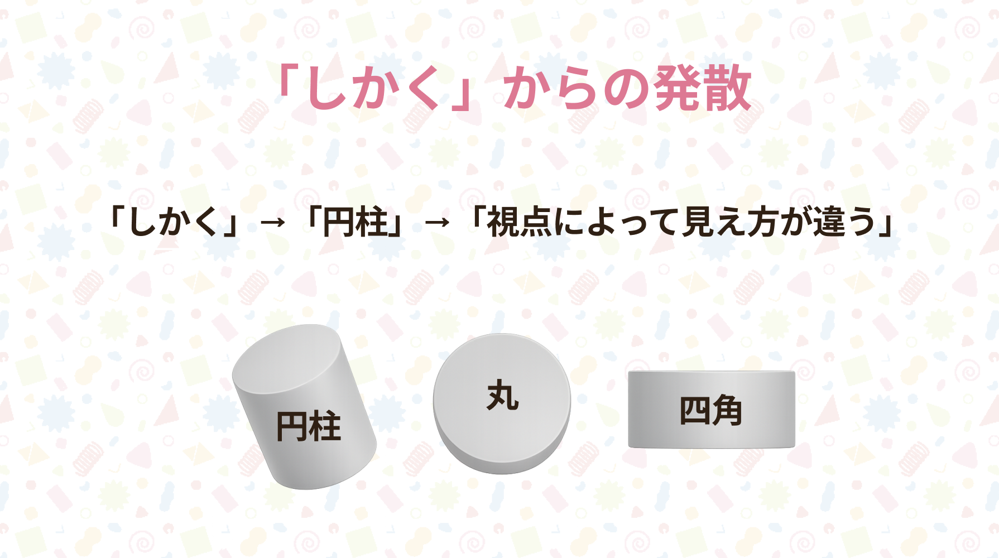
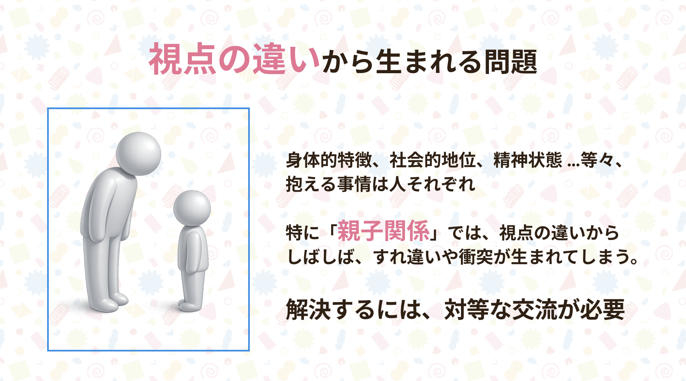
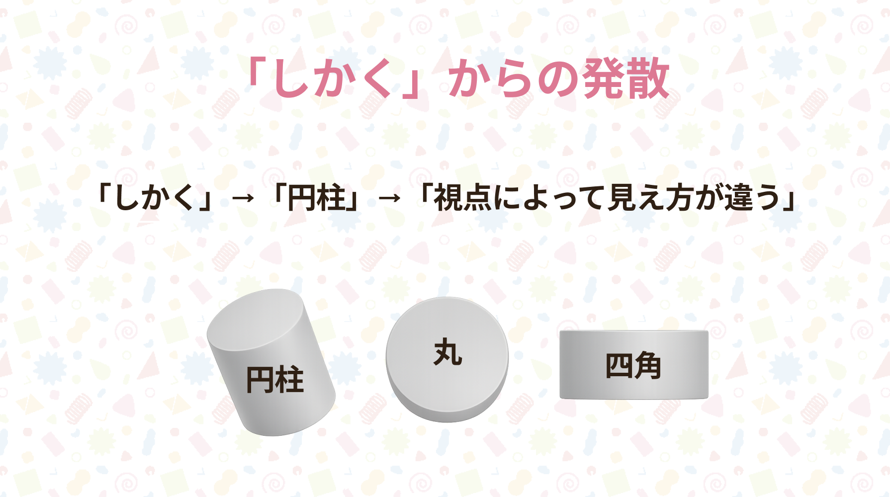
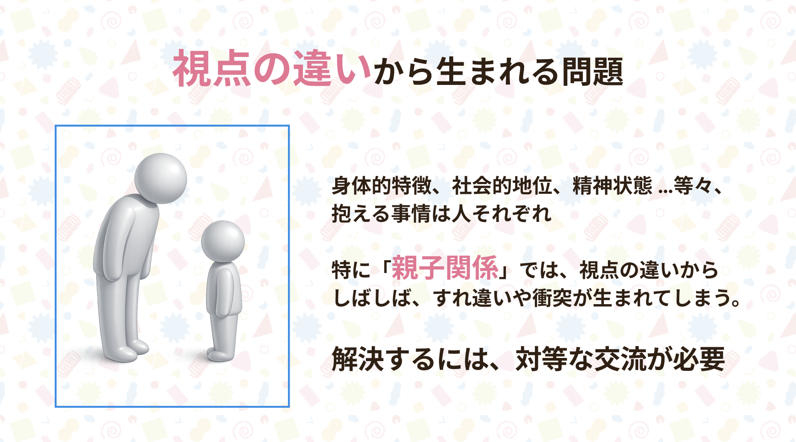
 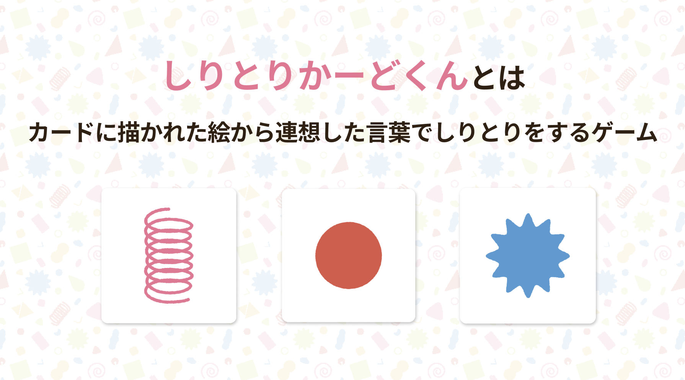
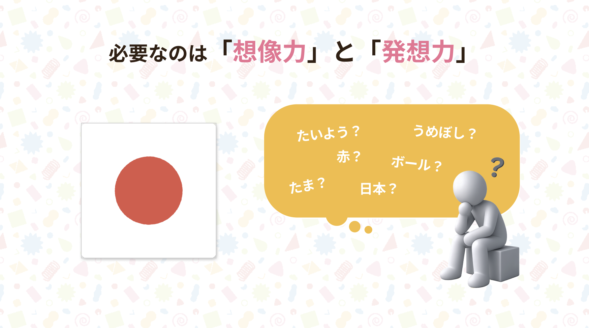
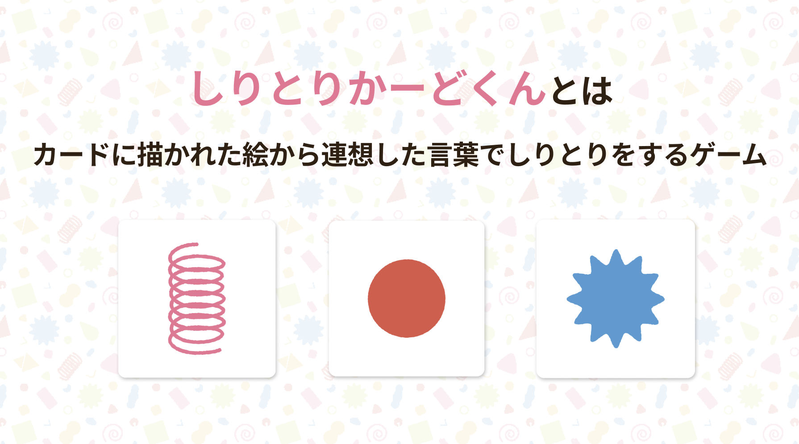
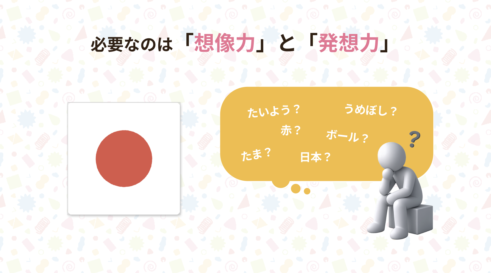
 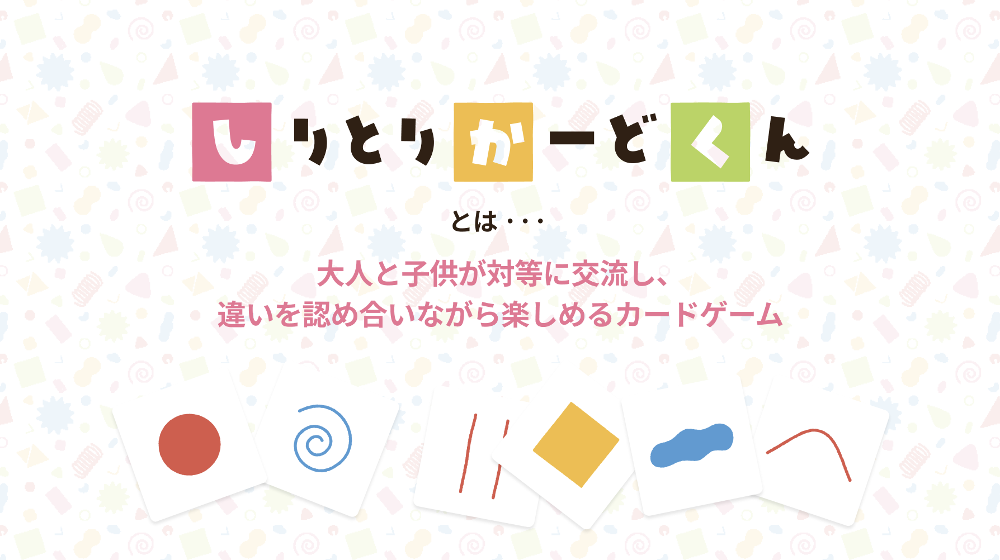
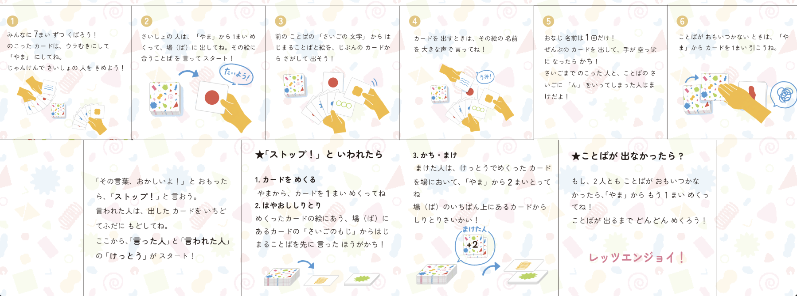
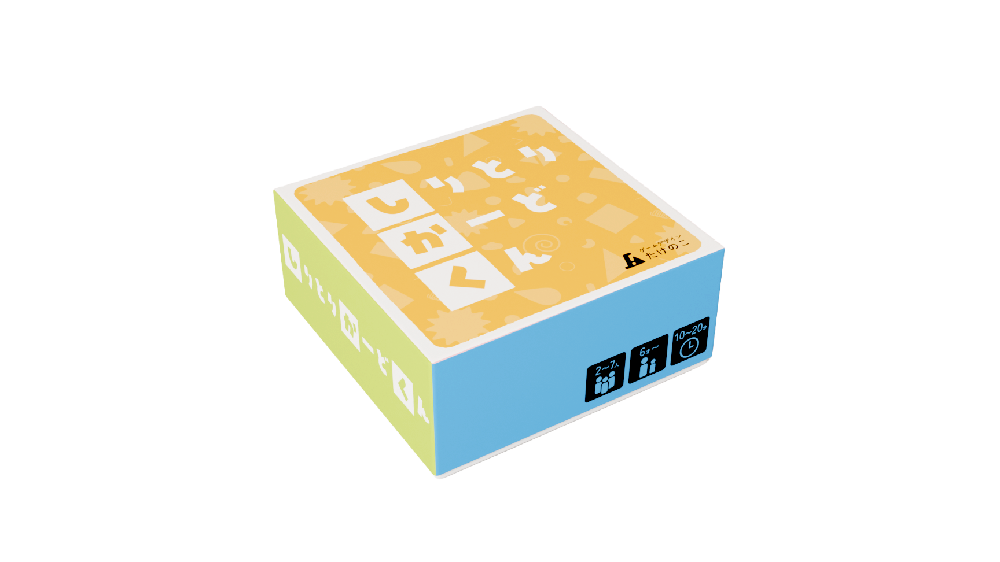
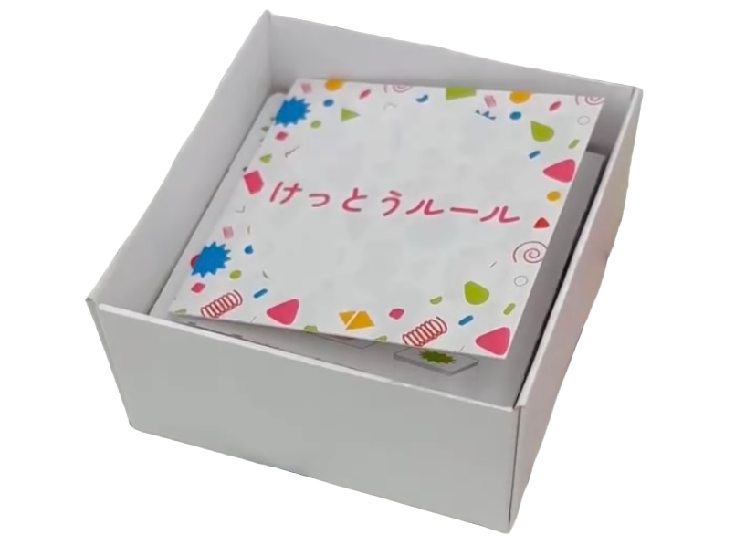
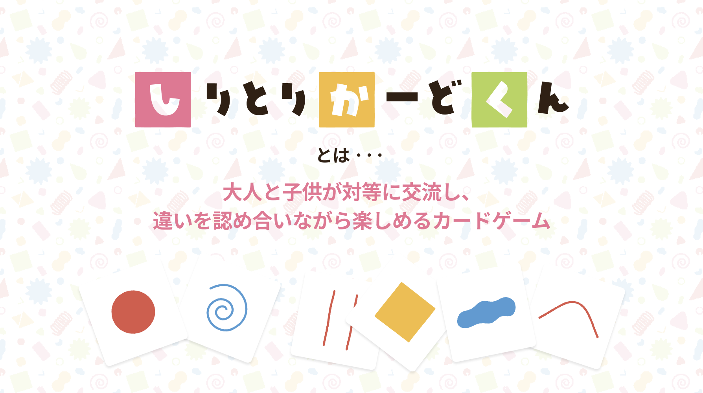
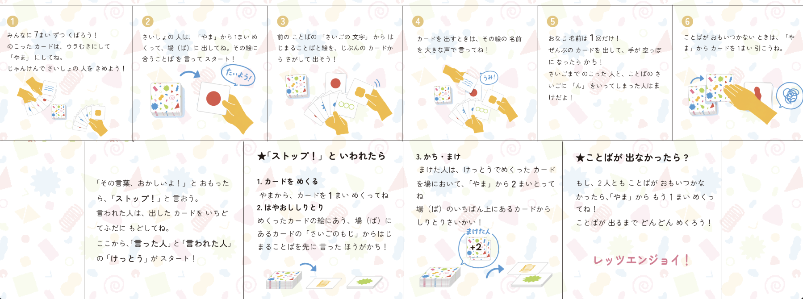
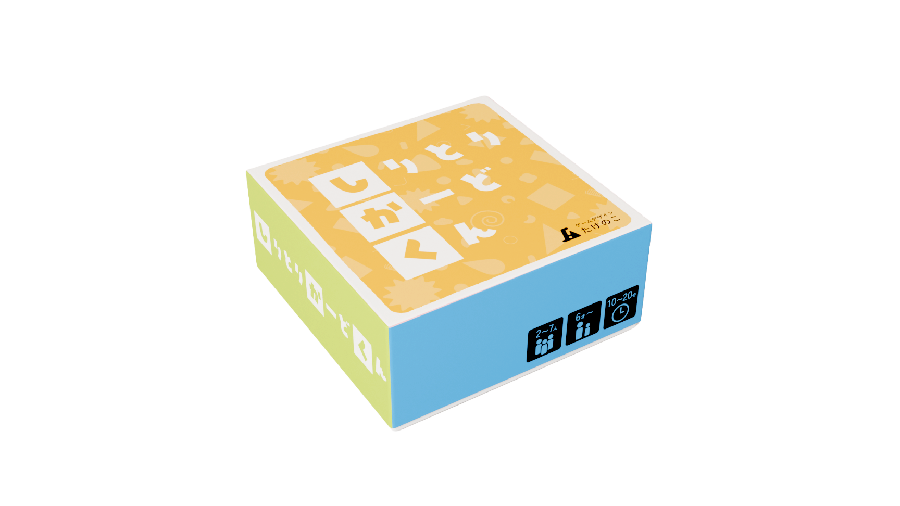
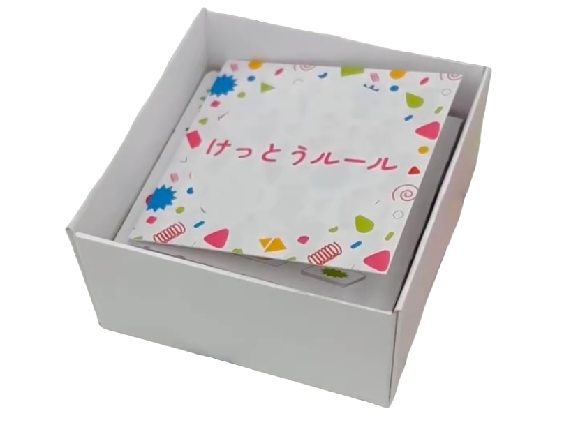
クリックで拡大表示
DEVELOPMENT
学部内サークルCREAMにてグループで作成し、主にルール設計を担当。
しりとりかーどくんとは、しりとりと連想ゲームを組み合わせたカードゲームで、子供と大人、特に親子が対等に勝負できるようなルール設計になっています。
カードには全部で65種類の簡単な図形や曖昧な形が描かれています。プレイヤーは手札に7枚、残りを山札として、1枚山札からめくって場に出してゲームを始めます。
そこから、プレイヤーは自分の手札から1枚を選び、場に出ているカードに対してしりとりで続く言葉を考え、カードを重ねていきます。例えば、場に「丸」が出ているときに「ループ」を思いついたら、「ループ」を連想させるカードを選んで重ねます。
これは早い者勝ちの勝負で、大人は知識量、子供は柔軟な発想力を生かして勝負します。先に手札が無くなった方があがって勝ちとなります。
ここで、親子の会話を増やし、対話を促すルールとして、決闘ルールというものがあります。これは場に出されたカードに対して、他のプレイヤーが「それは違う！」と主張したときに発動するルールで、カードを出したプレイヤーは、なぜそのカードがしりとりで続く言葉を連想させるのかを説明しなければなりません。
また、山札から1枚出して、そのカードでしりとり勝負を行い、負けたプレイヤーは手札が2枚増えてしまいます。
このルールにより、子供の突拍子も無い発想や、大人しか知らない難しい内容に対してお互いに共有し、会話が生まれるようになっています。また、ある程度の納得感を持ってカードを出すように誘導し、秩序を保つ役割もあります。
GAME FLOW

ゲーム開始前
手札を7枚、残りを山札として真ん中に置きます。
ゲーム開始
最初の人を1人決め、その人が山札をめくり、絵柄から連想する言葉を言ってスタートします。
早い者勝ちでカードを出す
ゲーム中は場にあるカードに対して、自分の手札のカードから、しりとりで続くような言葉を連想し、どんどんと出していきます。早い者勝ちで、連続で出すことも可能です。
出せるカードがない時
もし手札から出せるカードが見つからない時、いつでも山札から1枚手札に加えることができます。手札が増える代わり、自分の有利な文字へと誘導するチャンスでもあります。
他プレイヤーの出したカードに指摘する
他プレイヤーの出したカードは「ストップ」と指摘をすることができます。その場合、指摘者とカードを出した人で決闘を行います。
決闘では山札から1枚引き、そのカードを使って場のカードの続きを考える勝負をします。負けたプレイヤーは山札から2枚手札に加えます。
上がれば勝ち、残ったら負け
手札が無くなったら上がって勝ちとなります。もし３人以上の場合は最後の１人になるまでゲームを続け、残った人は負けとなります。